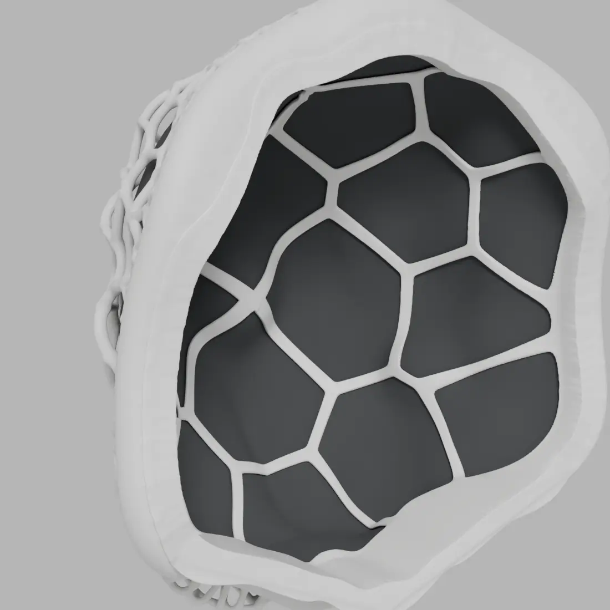
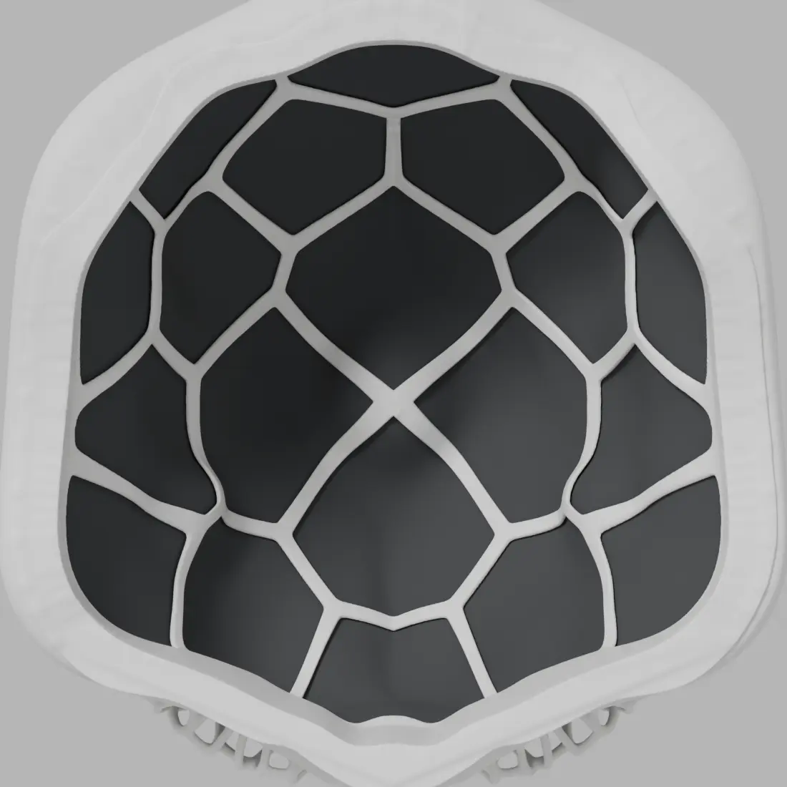
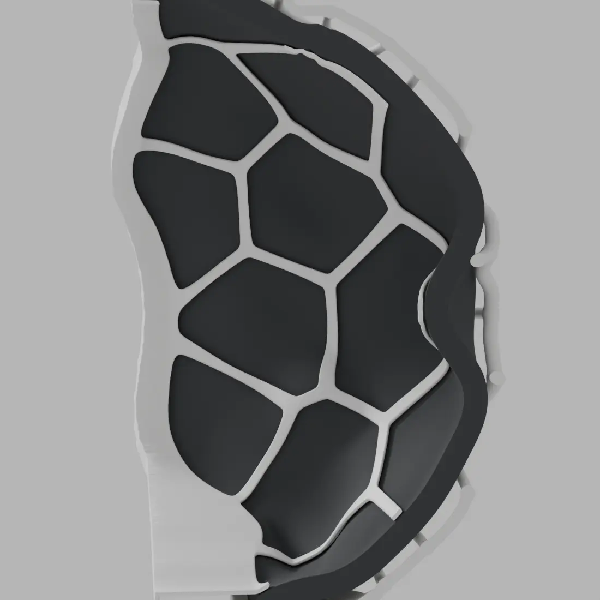
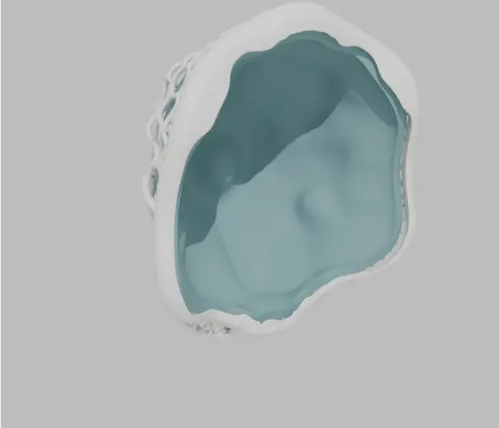
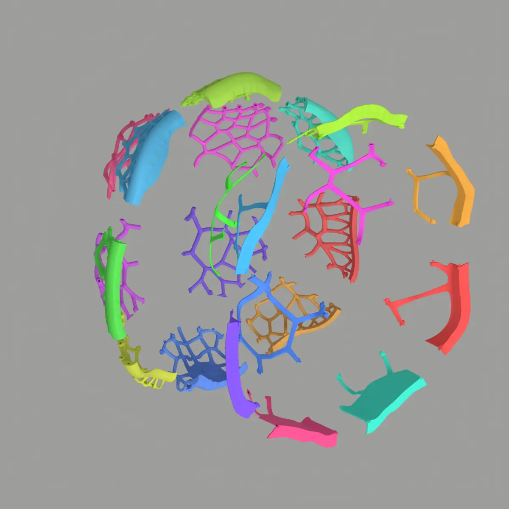
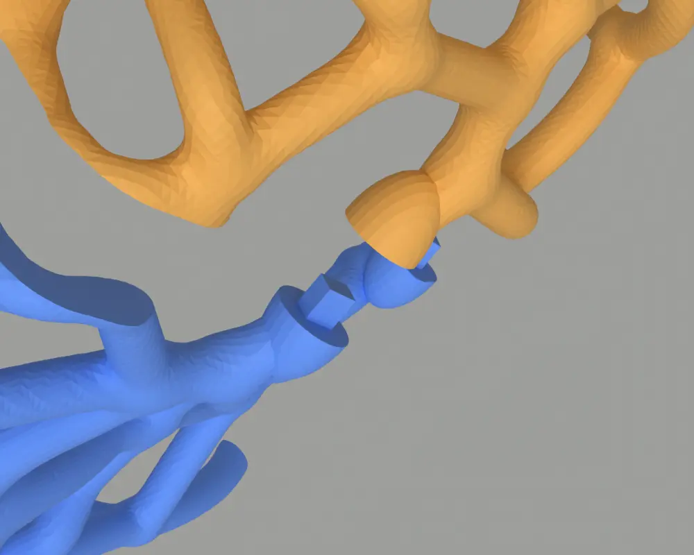
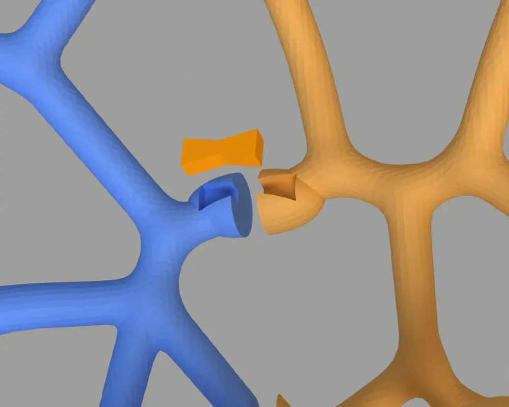
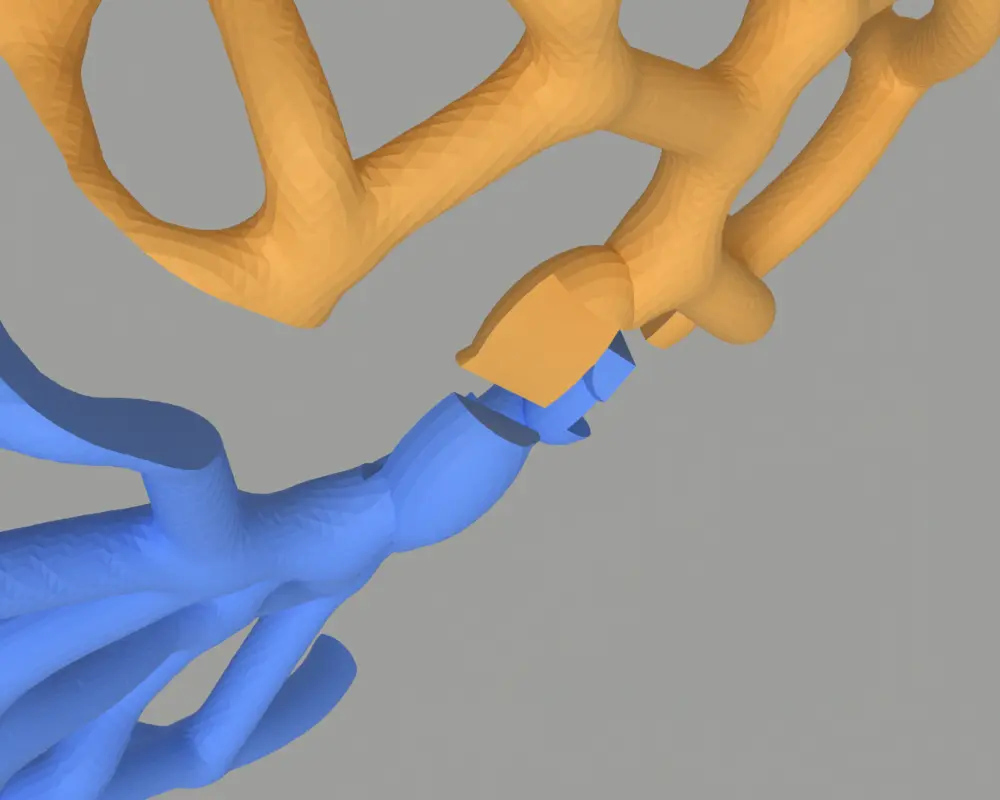
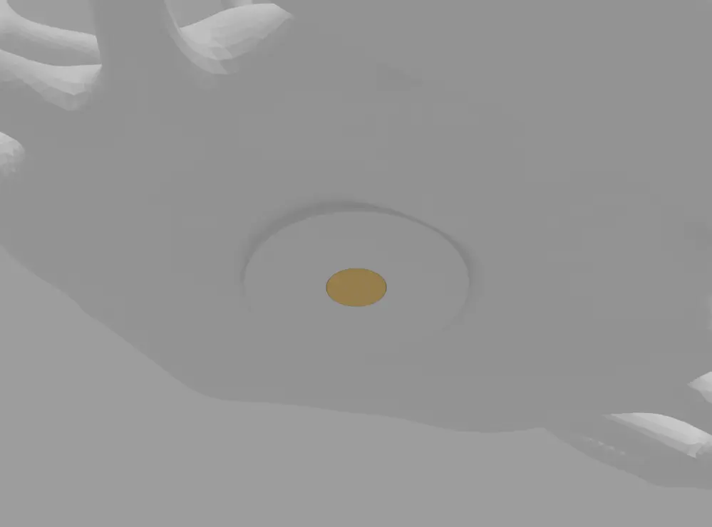

MRS-01
Modular Recording Shell. A small recording booth you print at home.
The idea
A small recording booth you print at home
An organic printed lattice forms the back shell. One 30 mm sheet of soft foam or felt, cut from a single flat piece, sits inside it. A printed front plate holds the foam in place and rests on the lip of the shell. The shell mounts on a standard 3/8" mic stand thread.

- Back shell
- 800 × 494 × 865 mm
- Front plate
- 766 × 430 × 795 mm
- Inlay, formed
- 746 × 446 × 784 mm
- Inlay, flat sheet
- 1228 × 1144 mm, 30 mm
From mockup to shell

One connected lattice
The starting point was a mockup. It was refined into one symmetric, connected lattice: a flat seam band at the front for the front plate to sit on, and a solid load area at the bottom that carries the whole weight on the stand.
The section shows how the foam sits between the lattice and the front plate.
The inlay

One flat sheet, six darts
The inlay is cut from one flat sheet of 30 mm foam or felt. Six darts are glued shut edge to edge, which turns the flat sheet into the curved lining. The last few centimetres flare outward so the edge tucks under the lip all round.
A cutting pattern at 1:1 and as tiles for A0 and A4 is in the repository.
Printing at home
Split for the printer you have
The back shell and the front plate come split into parts, ready turned into their print orientation. Pick one printer size and one of three connection types.


Block pins
A rectangular pin on one part, a socket on the other, glued.

Butterfly keys
Flat joint faces and a separate printed bow-tie key across each seam.

Overlap
A stepped half-lap of about 10 mm at each joint, glued.
Stand mount

A 3/8" insert from below
A 3/8"-16 heat-set insert, 12.7 mm long, is melted in from below until it sits flush with a flat 44 mm seat on the underside of the shell. The top of the load area stays solid and closed.
Open source
Files, scripts and pattern on GitHub
All print parts, the full model, the inlay pattern and the scripts that build the geometry are in the repository, under the GNU General Public License v3.0.
Status: nothing has been printed or assembled yet. All geometry is checked by computer only.
Renders from the MRS-01 repository, GPL-3.0.